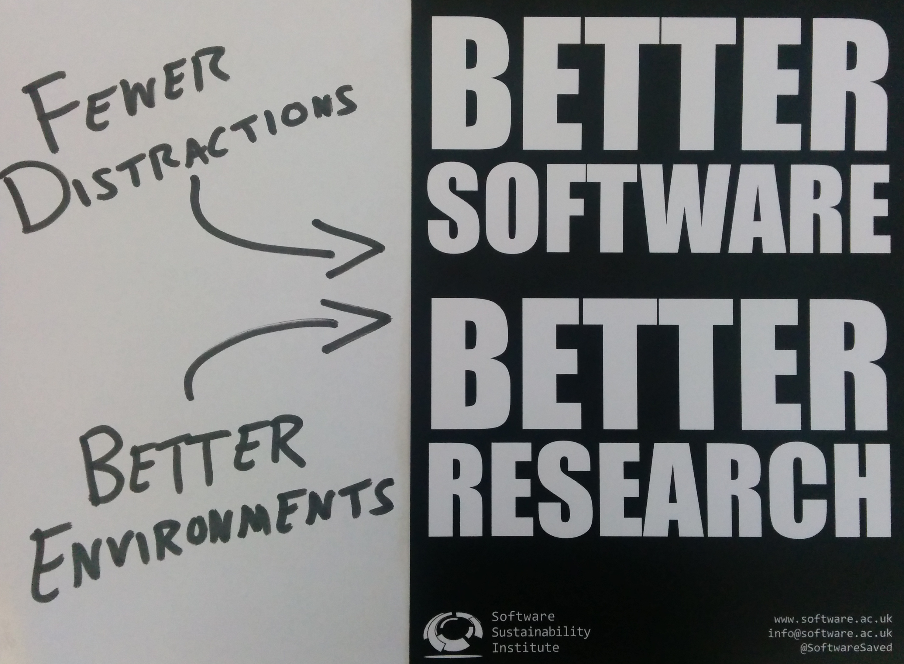

go away, i'm coding
go away, i'm coding

The Problem
Research software engineers often work in environments unsuitable for programming. Often management, colleagues don't recognise importance of environment.
The Solution
Find a friendly way of demonstrating the importance of environment. A game that has:
- programming-like task for non-programmers (featuring memory tasks, for example)
- introduces distractions
- assesses effect of distractions on programming-like task
- modular, so people can design new annoying distractions
- produce metrics. Does distraction really affect tasks?
The Implementation
Lots of reuse. Lots of stitching things together:
- base game mechanic forked from HTML5-Simon-Says
- random pop-up interruptions added by the team
- public Domain images from a number of sources (such as the DPLA's GIF IT UP competition) brought in as distractions
- score is an array (1 to n) and interruption an array (0 or 1; where 1 is an interruption occurred)
- visualisation represents both the user score and where the interruptions appear (built in Javascript)
Future Work
We have the basic workflow, but lots could be improved:
- "flow is fragile but, thankfully, it isn't as fragile as it first seems. Flow can only be broken if an interruption requires a programmer to mentally change contexts" (Dollery, 2003) Adding different categories of distraction - perhaps on a taxonomy from least to most similar to the main task - would allow demonstration of the types of distraction that are problematic
- the positive effect of the coffee shop hum (eg New York Times, 2013). Could we replicate attention boosting scenarios?
- implementation of full data analytics
- implementation as a public service
Some Admin
Created at Software Sustainability Institute Collaborations Workshop 2015 hackday by Mateusz Kuzak, David Perez-Suarez, Tom Pollard, Joshua Potter, and James Baker.

This work is licensed under a Creative Commons Attribution 4.0 International License. Exceptions: embeds to and from external sources, and direct quotations